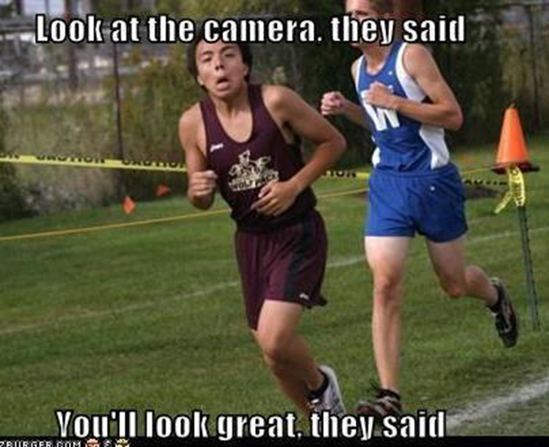
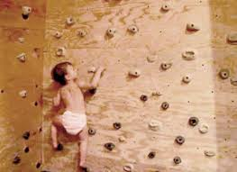

{kind=link}
{kind=link}
{kind=link}
and better
and better better
and even more better better!!!

For starters, WATCH this silly elephant make its best attempt to play
The evolution of my playing was characteristic of the following:
But over time I started to get better
and better
and better better
and even more better better!!!

I grew up in Souther California, more specifically Vista, CA, which is about 10 miles from the beach. Every Sunday my father took the entire family to the beach and is where I learned to get familiar with all aspects of the ocean, from waves, both big and small, rip current, tides, etc. But what interested me the most was watching the surfers. I didn't have a board, so I started to learn how to body surf, which is essentially using your body, primarily your hands and torso, as a hydroplane. It was the most thrilling feeling to have a wave propel you forward! It wasn't until I was much older that I saved up enough $$ to buy my own longboard and learn how to surf on my own.
Running

I don't believe anyone is born to love running. I detested the "sport". I didn't like to refer to it as a sport because I only associated it with sheer boredom and dread. My soccer coaches insisted on running because they said it would help us play better, primarily helping us with our endurance. It wasn't until after college that I really started to enjoy running, because it was after college that I stopped playing soccess and had coaches insisting that I run a ridiculous amount of miles. Go figure!
Rock climbing

My younger sister introduced me to rock climbing. She didn't take me to the outdoors to start climbing--she took me to her favorite indoor rock climbing gym and she happened to invite one of her better-looking friends, which perhaps could have peaked my interest in the sport even more. Seriously, though, I am a firm believer that climbing is one of those sports that we are born to do, and it's those who decide to continue climbing passed the age of 10 that tap into a reservoir of passion for climbing straight up!